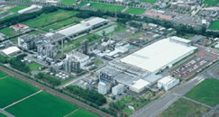
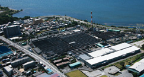
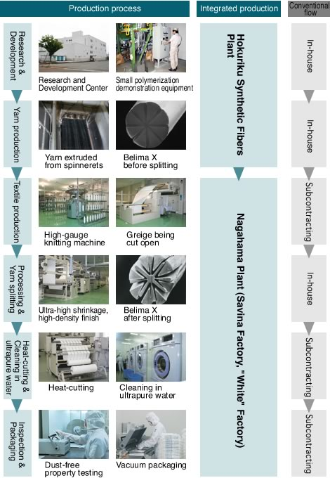

The complete in-house production from yarn
to wiping cloths has brought many advantages such as guaranteed
quality, stable supply, quick delivery, fine-tuned response
to customer needs, as well as reduced costs.

Hokuriku Synthetic Fibers Plant

Nagahama Plant
Benefits of Integrated Production
System
Quality Assurance
All
processes of production and quality control
are completed in-house.
Stable
Supply
In-house
production adjustment ensures sufficient production
capacity for ordered items.
Quick
Delivery
Thanks
to the continuous production line and shortened
distribution time, actual working hours are
only two days in total for the processes from
textile production through packaging/delivery.
Fine-Tuned
Response to Customer Needs
Tailored
product development to meet customer needs can
be carried out promptly in every production
process. In particular, enhanced originality
in new fiber development allows better response
to customer's demand.
Challenges
to Price Reduction
By
streamlining production process, curtailing
distribution costs and minimizing stock of finished
and half-finished goods, KB SEIREN strives to
reduce the costs/prices as much as possible.
Integrated Production Process for
Savina Wiping Cloths

●
The above applies to the production of Savina Minimax.
Copyright(c)2006 KB SEIREN,LTD.All Rights Reserved.
 KB SEIREN Co., Ltd.
KB SEIREN Co., Ltd.